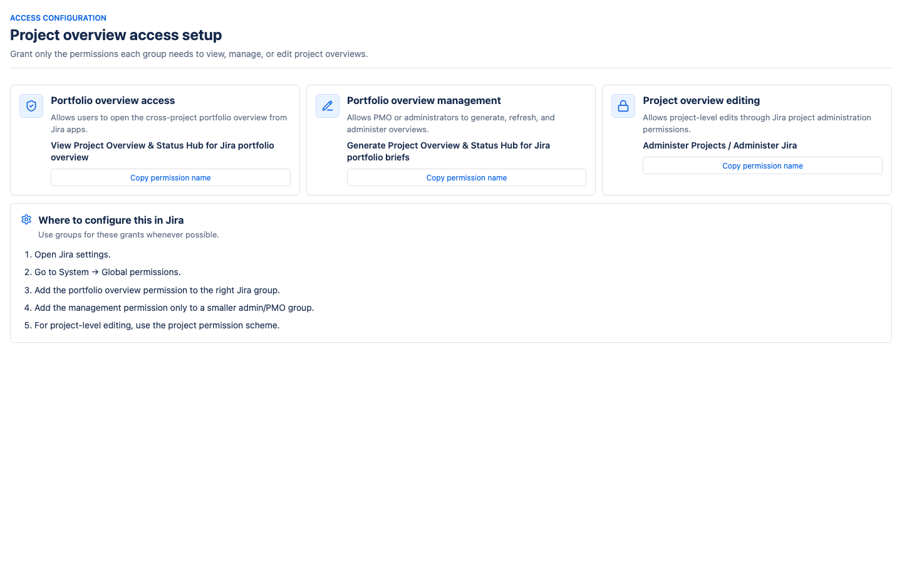
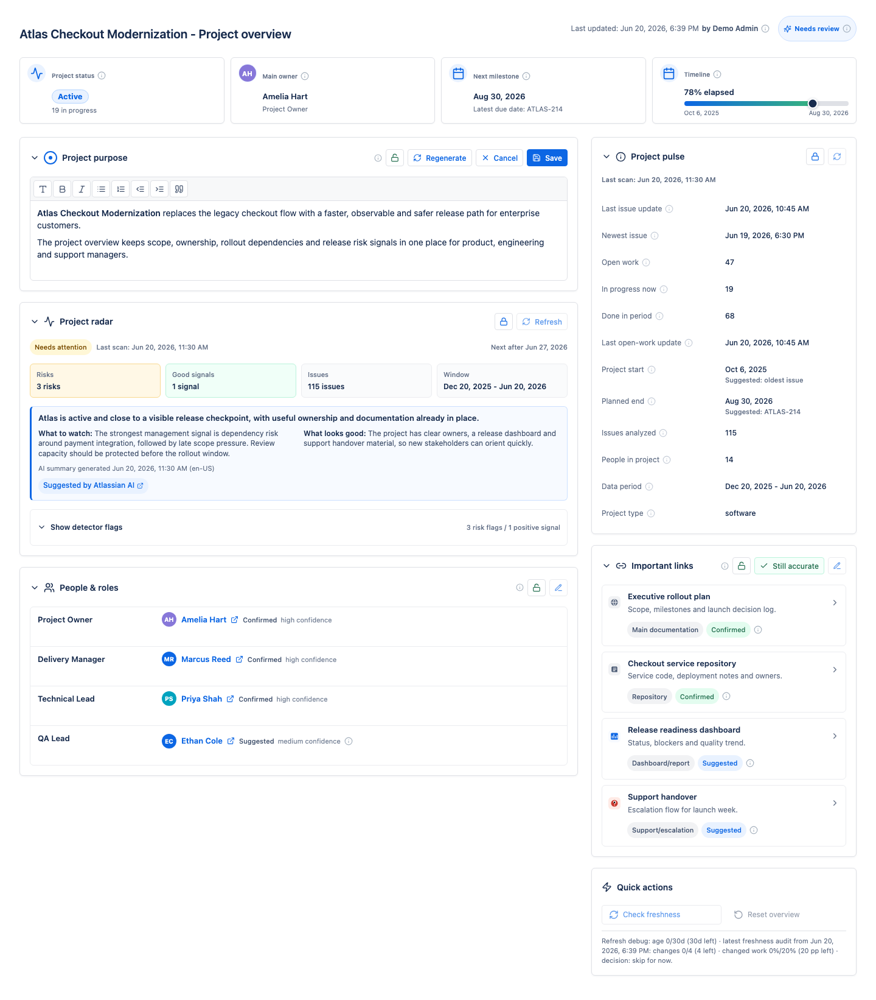
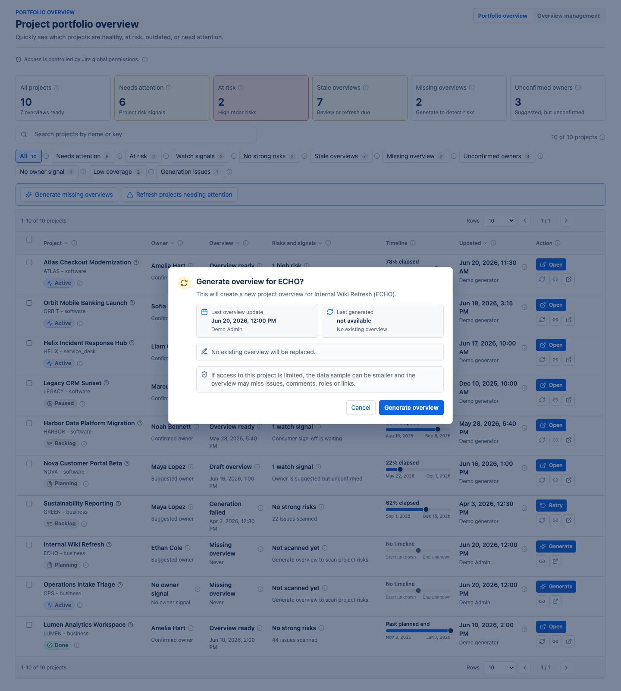
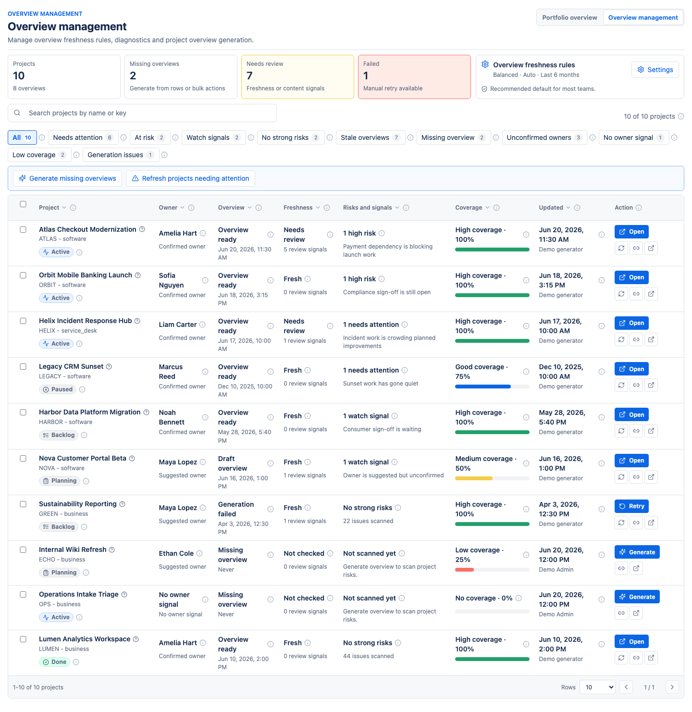
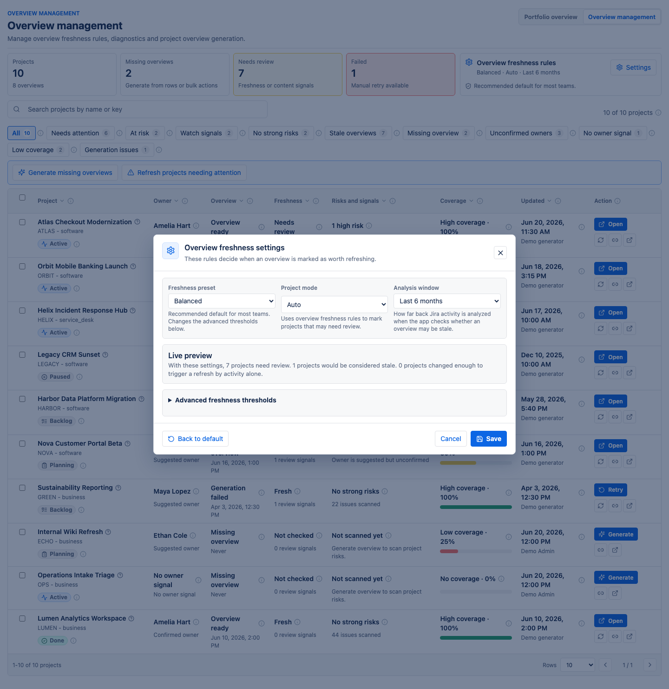

The short version
Project Overview & Status Hub for Jira creates a clear, readable overview of a Jira project. It brings together the project purpose, owners, useful links, current phase, timeline, activity facts, and risk signals in one place.
The app does not replace Jira. It reads project activity from Jira and turns it into a manager-friendly summary. It helps people understand a project without opening every board, filter, issue, comment, and document link.
The app helps answer questions such as:
- What is this project for?
- Who owns the project and who should I talk to?
- Where are the important documents, dashboards, repositories, and support links?
- Is the project active, planned, paused, done, or not scanned yet?
- Does the project have risk signals that should be discussed?
- Which projects in the wider portfolio need attention?
A generated overview should be treated as a strong first draft. A project administrator can review it, edit it, confirm suggested information, and save it as the official project overview inside the app.
Who the app is for
- Project managers and delivery managers use it to see project context, ownership, dates, and risk signals.
- Product owners and team leads use it to keep purpose, documentation, and responsibilities visible.
- PMO and portfolio teams use it to compare many projects and find the ones that need review.
- New joiners use it as a starting point before reading deeper project material.
- Jira administrators use it to configure access and control who can view, manage, or edit overviews.
The app is most useful when Jira contains real project activity: issues, statuses, owners, due dates, links, comments, and project roles. The better the project data, the better the generated overview.
Installation
Installation is done by a Jira administrator. Normal users do not need to install anything on their computers.
- Open Jira administration.
- Go to app management or the Atlassian Marketplace flow for your Jira site.
- Install Project Overview & Status Hub for Jira.
- Open the app configuration page.
- Grant the required Jira permissions to the right groups.
- Ask project administrators or portfolio managers to generate the first overviews.
What is added to Jira
- A project page for the overview of one Jira project.
- A global portfolio page for a cross-project overview.
- An admin configuration page that lists the permissions administrators need to grant.
- Global permissions that control app access and portfolio management.
What the app needs from Jira
The app reads Jira work data and Jira user data. It stores its own generated overviews and configuration in the app storage for your Jira site. It does not need a separate external database for project overviews.
Permissions and access
The app separates viewing, managing, and editing. This lets you give broad read access while keeping generation and administration limited to a smaller group.

Main permissions
| Purpose | Permission name | Typical audience |
|---|---|---|
| Use the app in projects when access is restricted | Use Project Overview & Status Hub for Jira | People who should read project overviews |
| Open the cross-project portfolio page | View Project Overview & Status Hub for Jira portfolio overview | PMO, delivery managers, leadership, team leads |
| Generate and refresh project overviews from portfolio | Generate Project Overview & Status Hub for Jira portfolio briefs | PMO, Jira administrators, selected managers |
| Edit an overview for a specific project | Administer Projects or Administer Jira | Project administrators and Jira administrators |
How to configure permissions in Jira
- Open Jira settings.
- Go to the global permissions area.
- Add the portfolio view permission to the group that should see portfolio.
- Add the portfolio management permission only to a smaller admin or PMO group.
- Use Jira project permissions to decide who can edit overviews inside projects.
What users see when access is missing
If the app is restricted and a user does not have the required permission, the app shows a clear message telling them to ask a Jira administrator for access. If only one section is restricted, the user can still see the sections they are allowed to view.
First run and first overview
After installation, the app does not have to scan everything immediately. You can generate overviews one project at a time, or from the portfolio page for several projects.
What happens when the first overview is generated
- The app reads the Jira project context it is allowed to see.
- It analyzes recent project activity, normally from the last 26 weeks.
- It prepares a draft overview: purpose, people, links, working model, workflow notes, project pulse, and radar.
- A project administrator reviews the draft.
- After saving, the overview becomes the official app overview for that project.
A generated draft is intentionally cautious. Suggested people and links should be confirmed before they are treated as official.
Project overview page
The project overview page is the main page for one project. It is designed to give a useful management-level view without forcing people to inspect every Jira issue.

Top summary cards
- Project status shows the current phase of the project, calculated from Jira status categories.
- Main owner shows the best owner information saved or suggested for the project.
- Next milestone shows the planned end date or the latest due date found in Jira.
- Timeline shows how far the project is between its start and planned end.
Project purpose
The project purpose explains why the project exists. It should be understandable to someone who is new to the project. The app can suggest a purpose from Jira activity, but a human should review and save the final wording.
Project radar
Project radar highlights signals worth discussing. It does not make decisions for the team. It gives managers a short list of things to watch, plus positive signals that show what is going well.
Radar can show:
- risk signals, such as blockers, scope pressure, stale review work, or quality pressure,
- positive signals, such as steady completion or clear ownership,
- the number of issues analyzed,
- the analysis window,
- an AI-written summary if AI summaries are enabled and available,
- detector evidence and example issue keys.
People & roles
This section lists people connected with the project. A person can be confirmed or suggested. Confirmed means a user accepted the information. Suggested means the app found signs in Jira, but someone should check it.
Project pulse
Project pulse is a compact list of project facts: last issue update, newest issue, open work, work in progress, completed work, project dates, number of analyzed issues, people count, data period, and project type.
Important links
Important links help people jump to the right documentation, dashboards, repositories, Jira boards, team channels, environments, or support handover material. Links can also be confirmed or suggested.
Quick actions
Project administrators can check freshness, refresh project pulse, refresh project radar, or reset the overview. These actions are meant to keep the overview useful as Jira activity changes.
Editing a project overview
Project administrators and Jira administrators can edit the overview. The goal is to combine automatic discovery with human judgment.

What can be edited
- Purpose can be rewritten or refined.
- People and roles can be confirmed, removed, or adjusted.
- Important links can be added, removed, and confirmed.
- Project start and planned end dates can be overridden manually.
Saving an overview
Saving makes the overview the official app version for that project. Portfolio uses saved overviews as its source. If an overview is still a draft, portfolio will show it as a draft.
Regenerating a section
Regenerating asks the app to prepare a new suggestion for that section from current Jira data. It is helpful when the project has changed, but the result should still be reviewed before saving.
Resetting an overview
Resetting replaces the existing overview with a fresh generated draft. This is useful when the project has changed so much that small edits are not enough. Use it carefully because generated content can replace earlier manual edits.
Section access
Not every section needs to be visible to everyone. For example, onboarding sections can be open to all project users, while radar or management sections may be restricted.

Visibility modes
- Everyone with project access means anyone who can access the Jira project can view the section.
- Selected roles and users means only project administrators and explicitly granted roles or users can view it.
View and edit
View lets someone see the section. Edit lets someone change it. Project administrators keep administrative access.
Recommended use
Keep general onboarding information broadly visible. Restrict sections that contain management notes, sensitive risk signals, or information intended only for a smaller group.
Checking and refreshing a project overview
Projects change over time. Jira issues move, new links appear, roles shift, and release dates change. The app helps you keep the overview fresh without overwriting human-approved content too quickly.
Check freshness
Check freshness compares the saved overview with a fresh draft from current Jira data. Instead of immediately replacing the saved overview, the app shows review signals for sections that may need attention.
Freshness signals can appear when:
- new issue types appear in recent activity,
- the number of analyzed issues changes a lot,
- a different person becomes the strongest activity-based owner suggestion,
- new useful link candidates are found,
- new workflow statuses appear,
- a section has not been confirmed or updated for a long time.
Still accurate
If the app suggests a review but the section is still correct, click Still accurate. This records that a human checked the section and clears the signal.
Project pulse refresh
Project pulse refresh updates the factual activity information, such as latest issue update, open work, work in progress, completed work, and data period.
Project radar refresh
Project radar refresh reruns the radar signals and, if AI summaries are enabled, can generate a new radar narrative. Radar refresh is useful before management reviews, release checkpoints, or portfolio status meetings.
Portfolio overview
Portfolio overview shows many projects in one place. It is designed for people who need to see where attention is needed across a set of projects.

Top summary cards
- All projects counts every project visible in the portfolio dataset.
- Needs attention counts projects with radar risk signals.
- At risk counts projects with high-severity radar risks.
- Stale overviews counts overviews that should be reviewed or refreshed.
- Missing overviews counts projects without a generated overview.
- Unconfirmed owners counts projects where the owner is still a suggestion.
Project table
Each project row shows:
- project name and key,
- owner,
- overview status,
- risk and signal summary,
- timeline,
- last update,
- available action: open, generate, refresh, or retry.
Filters
Filters help narrow the portfolio. You can focus on projects needing attention, high-risk projects, projects with watch signals, stale overviews, missing overviews, unconfirmed owners, low coverage, or generation issues.
Search
Search matches project name and project key. It does not search inside issue comments or documents.
Generating and refreshing reports from portfolio
Users with portfolio management permission can generate missing overviews and refresh existing overviews from the portfolio page.

Generate one missing overview
- Find a project with status Missing overview.
- Click Generate.
- Review the confirmation message.
- Click Generate overview.
- Wait for the generation process to finish.
- Open the generated overview and review it before treating it as official.
Refresh one existing overview
Use refresh when an overview exists but the project has changed. The app generates an updated overview from the latest Jira data available to the generating user.
Bulk actions
- Generate missing overviews creates overviews for projects that do not have one.
- Refresh projects needing attention refreshes projects with attention signals.
- Refresh selected refreshes projects selected in the table.
- Generate selected missing creates overviews for selected projects that are missing one.
Generation progress
The app shows progress while generation runs. It reports how many issues were scanned and which phase is running, such as metadata preparation, scanning, analysis, purpose generation, radar narrative generation, or saving.
Freshness settings
The Overview management view is used to manage freshness rules, project overview generation, and diagnostics.


Freshness preset
| Preset | Meaning | Good for |
|---|---|---|
| Relaxed | Fewer review prompts | Stable portfolios with fewer changes |
| Balanced | Recommended default | Most teams |
| Strict | Earlier review prompts | Fast-changing or high-risk portfolios |
Project mode
- Auto marks projects that may need review based on the freshness rules.
- Manual only leaves refresh decisions to administrators.
- Keep fresh makes the app suggest reviews earlier.
Analysis window
The analysis window controls how far back Jira activity is analyzed. Common choices are the last 3 months, 6 months, or 12 months. A longer window gives more history. A shorter window focuses more on recent work.
Advanced thresholds
Advanced thresholds control when the app marks an overview as worth refreshing. The settings are intentionally limited to sensible ranges:
- active project maximum overview age: 7 to 180 days,
- inactive project maximum overview age: 14 to 365 days,
- meaningful changes for active projects: 1 to 50 changes,
- meaningful changes for inactive projects: 1 to 100 changes,
- changed work share: 1% to 100%.
How the app calculates statuses and numbers
This section explains the app logic without technical jargon. One important rule: the project status shown on the project page and the status shown in portfolio use the same shared business logic.
Project status
The app looks at Jira status categories: To Do, In Progress, Done, and other statuses. It then chooses a plain-language phase.
| Status | When it appears |
|---|---|
| Not scanned yet | No overview data has been generated yet. |
| No work found | No Jira issues were found in the analyzed data. |
| Planning | There is To Do work, but no work in progress and no completed work. |
| Backlog | There is To Do work and Done work, but nothing currently In Progress. |
| Active | At least one issue is In Progress. |
| Paused | There is unfinished work, but no movement on unfinished work for about 6 months. |
| Done | All known work is done. |
| Needs classification | Jira statuses are unusual and the app cannot classify them confidently. |
Business status
Business status is a simpler version of project status. Active, Planning, and Backlog are treated as active. Paused is treated as paused. Done is treated as closed. No work found is treated as archived. Unknown cases remain unknown.
Project start and planned end
Manual dates win. If a project administrator manually sets a start or planned end date, the app uses that. If no manual date exists, the app uses Jira suggestions:
- project start: the oldest known issue date,
- planned end: the latest due date found in analyzed issues.
Timeline
Timeline shows how much time has passed between start and planned end. If one date is missing, the app shows that dates are needed. If the current date is past the planned end, the timeline shows that the project is past planned end.
Coverage score
Coverage is a simple completeness score. It checks four things, each worth 25%:
- an overview exists,
- the overview has a meaningful purpose,
- the overview has an owner,
- the overview has important links.
Needs attention and At risk
Needs attention counts projects with radar risk signals: high, attention, or watch. At risk is narrower and counts only projects with high-severity risks.
Stale overviews
An overview can be considered stale when:
- freshness checks suggest a section review,
- the overview is older than the configured age threshold,
- enough meaningful Jira changes were detected,
- the changed work share reaches the configured percentage,
- refresh was forced,
- relevant freshness configuration changed.
Meaningful Jira changes
The app does not treat every small edit as a reason to refresh. It pays attention to changes that often matter for management reporting, such as:
- high, critical, highest, or blocker priority,
- issue types such as bug, defect, incident, risk, or blocker,
- statuses such as blocked, escalated, release, done, closed, or resolved,
- labels related to risk, blockers, escalation, or blocked work.
Unconfirmed owners
A project is counted as having an unconfirmed owner when the app has a likely owner suggestion, but nobody has confirmed it in the overview. This is deliberate: suggestions should not pretend to be official responsibility.
Missing overview
A project is missing an overview when it exists in the portfolio project list but no overview has been generated or saved for it yet.
AI, suggestions, and limits
The app can use Atlassian-hosted Forge LLMs to help write readable text, such as a project purpose suggestion or a radar narrative. AI helps with wording. It does not replace project ownership or human review.
What AI can help generate
- an editable project purpose suggestion,
- a project radar summary,
- a short explanation of what to watch and what looks good.
What still works without AI
The core app still works without AI: project facts, status, portfolio tables, dates, links, people suggestions, detector signals, and freshness checks remain available. If AI is disabled or the monthly limit is reached, deterministic data is still shown.
Monthly limit
The monthly AI limit is shared by purpose suggestions and project radar summaries. When usage gets close to the limit, the app can warn users before an AI action. When the limit is used up, new AI-written summaries are hidden until the limit resets, but the rest of the overview remains usable.
Data, privacy, and limitations
Where data comes from
The app reads Jira data it is allowed to access, such as projects, issues, statuses, users, project roles, links, due dates, and recent activity.
Why two users may see different results
Jira permissions matter. If the user generating or refreshing an overview cannot see some issues, comments, roles, or links, the app may not be able to include them. This is why the app shows who last generated or saved an overview.
Where app data is stored
The app stores generated overviews, settings, and access policies in Forge app storage for the Jira site. It does not need a separate external server for these overviews.
What the app does not do
- It does not change Jira issue statuses.
- It does not make project decisions.
- It does not prove that a suggested owner is officially accountable.
- It does not show data Jira does not allow it to access.
- It should not be treated as a legal, compliance, or audit record by itself.
Why human review matters
The app organizes signals and context, but humans understand business intent. The best results come from using generated overviews as a starting point and then confirming the important parts.
Recommended rollout setup
- Install the app on a test or staging Jira site first, if your organization uses one.
- Grant portfolio view access to the people who need cross-project context.
- Grant portfolio management access only to a small group.
- Pick a small set of active projects and generate their first overviews.
- Ask project administrators to review purpose, owners, links, and radar signals.
- Confirm or remove suggested people and links.
- Set section access for sensitive sections such as radar or management notes.
- Use the portfolio page to identify missing, stale, or high-risk overviews.
- Adjust freshness settings only after seeing how noisy or quiet the default mode is for your organization.
FAQ
Does the app change Jira issues?
No. It reads Jira data and stores an app-specific overview. It does not move Jira issues or change issue statuses.
Can we use the app without AI?
Yes. AI improves readable summaries, but the main overview, portfolio, status calculations, dates, links, and detector signals still work without AI.
Why is a project marked Active?
Because at least one analyzed issue is in the Jira In Progress category.
Why is a project marked Paused?
Because unfinished work exists, but the app has not seen recent movement on unfinished work for about 6 months.
Why does portfolio say there is no owner when someone leads the project?
Usually because the owner has not been confirmed in the overview, or the app did not have enough visible Jira activity to suggest one. Open the project overview and confirm the owner.
Why does an overview need review?
The app may have found new activity, new useful links, a changed owner signal, workflow changes, an old section, or enough meaningful Jira changes to pass the configured freshness rules.
Can we hide radar or pulse from most users?
Yes. A project administrator can restrict section visibility to selected project roles and users.
What should we do if generation fails?
Portfolio shows a failed generation state and a retry action. Check whether the generating user has access to the project and whether Jira returned a temporary error. Then retry.
Why do dates sometimes look wrong?
If no manual dates were saved, the app uses Jira suggestions: oldest known issue for project start and latest due date for planned end. A project administrator can override these dates manually.
How often should we refresh overviews?
Start with the Balanced preset. Refresh high-risk or fast-changing projects more often. Stable projects can usually be checked less frequently.